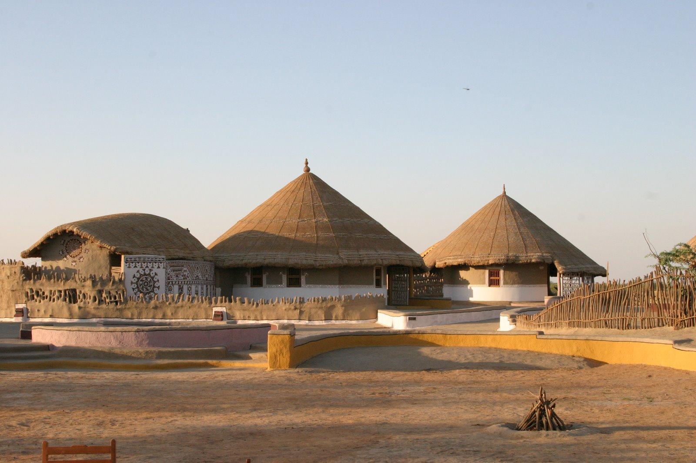

Extensive grasslands of Kutch, spreading across the horizon enlivened with avifaunal and mammalian life is an ideal place for any vacationer to get spellbound by the rustic exquisiteness of nature. The Kutch Bustard Sanctuary set amidst this natural haven stretches over an area of 2 square kilometers in the Abdusa Taluka near Nalia in Kutch. The woodlands covering the Jhakau and Budia villages extend to this magnificent sanctuary which is the sole home of Great Indian Bustard bird and various other life forms. The area was declared an indigenous home to Great Indian Bustard and a sanctuary in the year 1992.

Great Indian Bustard is a large ground dwelling bird with long neck and ostrich like elongated legs. This endangered species with its neutral colored coat blends with the semi-arid grassland, and provides a visual surprise to the visitors. Lesser Florican Bustards breed here while the flamboyant Macqueen’s Bustard is a winter visitor of this region. The sanctuary is considered a unique dwelling for these birds which are almost becoming extinct in other regions of the country. Other rare species of animals and birds are fellow habitants who make this sanctuary a treat for nature connoisseurs. Chinkaras, jungle cats, Nilgai and many other mammals inhabit this area, along with the Indian wolf which proliferates in this untamed retreat.
How to get there
By road: The Nearest bus station is Nalia (20 kms).
By rail: The Nearest Railway station is Nalia (20 kms).
By air: The Nearest airport is Bhuj (110 kms).